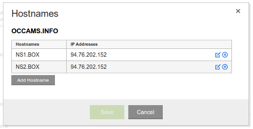
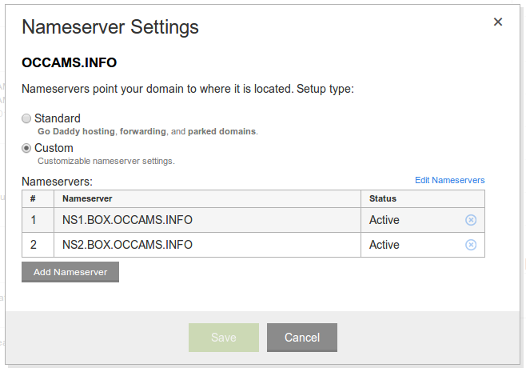

Register a new domain name, or have a domain name that you can have your Mail-in-a-Box completely take over.
The first step in setting up a Mail-in-a-Box is to pick your new email address. An email address has two parts. The part after the @-sign is the “domain name.” Each domain name is owned by someone, and you are going to be the owner of your own.
Josh’s email address is @occams.info. His domain name is occams.info.
Besides using the domain name for email, you’ll also be able to put a simple website at the domain.
Go over to Gandi.net, a domain name registrar, and buy a new domain name. It’s about $17/year, but the price varies by which “top-level domain” (TLD) you use, whether it’s .com, .me, .info, and so on.
Buy anything you want. This is your new identity.
After you buy the name you’ll need to set it up, but that comes later so keep reading. Note that a Mail-in-a-Box can handle the email for multiple domains names too — more on that later.
Your box’s hostname should be box.yourdomain.com.
Every machine connected to the Internet has a name and an address.
The address, an IP address, is like a telephone number. It’s made up of numbers and is assigned to you by whoever provides Internet access to you.
The name — called a “hostname” — is something you decide. It can be a domain name you own or any “subdomain” of a domain you own.
For your Mail-in-a-Box, we recommend naming your box box + . + your domain name.
Josh’s Mail-in-a-Box is named box.occams.info. This is its hostname.
Your Mail-in-a-Box may handle the email for multiple domain names, but the box has a single name.
Spin up an Ubuntu 14.04 x64 machine with about 1 GB memory and 12 GB disk, and then set the machine’s reverse DNS.
Now you will rent a machine, or a virtual part of a machine, somewhere in “the cloud.” We’ll call this machine your box.
We recommend going over to Digital Ocean. You must choose the Ubuntu 14.04 x64 operating system. We recommend using a machine with 1 GB of RAM and a 30 GB disk. At Digital Ocean this setup costs $10/month.
At Digital Ocean, your machine is called a “droplet” and you must name your droplet the same as its hostname.
Josh’s droplet would be named box.occams.info (if Josh used Digital Ocean).
I've been a long-time customer of Rimuhosting.com which also provides cheap virtual machines, which they call “VPS”s, at several locations around the world. Choose a location near you — it’ll be faster!
Wherever you rent your box, you must choose the Ubuntu 14.04 x64 operating system. Most any cloud provider will do, but not Amazon Web Services because its network is often blocked to prevent users from sending spam.
Each cloud provider will have different instructions for setting up “reverse DNS.” You must follow your cloud provider’s instructions for setting the reverse DNS of your box to your box’s hostname. At Digital Ocean you set the name of your droplet to the box’s hostname, as mentioned above.
Josh’s box’s reverse DNS is set to the same as the box’s hostname: box.occams.info.
Your cloud provider will also now tell you the IP address of your machine. It looks like 123.123.123.123.
Josh’s box’s IP address is 94.76.202.152.
At your registrar, create hostname records for ns1.box.yourdomain.com and ns2.box.yourdomain.com providing your box’s IP address, and then set your domain name’s nameservers to these two hostnames.
We’ll now go back to your domain name registrar to associate your domain name with your box’s IP address.
The association between your domain name and IP address is . . . complicated. The domain name system (DNS) is a global, distributed network of machines that turn domain names into IP addresses. Your registrar and your box play a role in the domain name system.
The way this works varies from registrar to registrar, but it goes something like this:
First, you’ll create two “glue records.” The purpose of glue records is to say that your box is becoming a part of the domain name system. These records go by different names at different registars, so also look out for “hostnames” or child nameservers. This will not be found in a DNS control panel.
A glue record has a hostname and an IP address. For historical reasons we need two glue records. The two records you need to create are for ns1 + . + your box’s actual hostname and ns2 + . + your box’s actual hostname. Those are for the hostname part of the glue records. (They stand for “nameserver one” and “nameserver two”.) For the IP address, enter the IP address of your box.
Josh’s box’s hostname is box.occams.info. The two glue records are for ns1.box.occams.info and ns2.box.occams.info and list the box’s IP address is 94.76.202.152.
It looks something like what’s shown in the next image.
Your registrar may ask you to enter these hostnames with the domain name part omitted, as mine did in this case. If so, enter the part of the hostname up to the domain name.
Josh’s domain name is occams.info. The two glue hostnames are ns1.box.occams.info and ns2.box.occams.info, but his registrar asks him to enter them with “.occams.info” omitted leaving just ns1.box and ns2.box.
If your Mail-in-a-Box is handling mail for multiple domains, you will still only set these hostnames once.
Second, you’ll tell your domain registrar that your domain name’s nameservers are ns1 + . + your box’s hostname and ns2 + . + your box’s hostname.
You will usually be turning off the registrar’s provided nameservers and turning on custom servers. This is usually not found in the domain name’s DNS control panel. You will be disabling that control panel.
Here’s what that looks like in my registrar:
Don’t worry if you are confused about what this all means. It is complicated — we all get confused at this point.
Clone our github repo https://github.com/JoshData/mailinabox, cd to the directory, and run setup/start.sh.
You will now have to log into your running box using SSH. Your cloud provider will probably give you some instructions on how to do that. If your personal computer has a command line, you'll be doing something like this:
ssh -i yourkey.pem ubuntu@10.20.30.40
Once inside, you will now get the Mail-in-a-Box code onto your box. Type:
sudo apt-get install -y git git clone https://github.com/joshdata/mailinabox cd mailinabox
And then start the setup process:
sudo setup/start.sh
You will be asked to enter the email address you want and a few other configuration questions. At the end you will be asked for a password for your email address.
This password will be used to login to webmail, and to authorize sending and receiving mail through SMTP and IMAP. It will not be used to log onto your Mail-in-a-Box server.
It is always safe to re-run the setup script. If something goes wrong or you just want to see it again, just do again sudo setup/start.sh.
When the setup script is done running, you have a working mail server. But first check that everything is correct so far by typing:
sudo management/whats_next.py
This script reports configuration problems and next steps.
Things related to the domain name system sometimes take several minutes, or much longer, to update. This is called DNS propagation. If you get domain name resolving problems, you may need to wait a bit for your registrar and your home ISP’s name servers to update. If the problem persists, there is a configuration problem either at your domain name registrar or on the box.
Also right now your SSL certificates won’t be signed. This does not prevent you from sending or receiving email, though, so we will come back to this below.
You have webmail at https://hostname/mail. IMAP with SSL is on port 993 and SMTP with STARTTLS is on port 587. Your username is your email address.
You can access your email at https://hostname/mail, where hostname is your box’s hostname.
Josh goes to https://box.occams.info/mail to check and send email using webmail.
When you visit this page you will see a warning about the site’s SSL certificate being invalid. Right now you are using a self-signed certificate. If it is unlikely that anyone is running an active network attack on you right now, just permanently confirm the security exception and you will be good to go.
(Otherwise, check that the SSL fingerprint show to you matches the SSL fingerprint printed toward the top of the long output of the setup script. You may run sudo setup/start.sh again if you missed it.)
Your username is the email address you entered when you ran the setup program above.
Try to send some mail now!
On mobile devices you might need to install a “mail client” app. We recommend K-9 Mail. On a desktop you could try Mozilla Thunderbird.
When configuring these applications you will need to provide them with IMAP and SMTP settings. Your IMAP and SMTP server is the box’s hostname. For IMAP, you must choose SSL and port 993. For SMTP, you must choose STARTTLS and port 587.
Josh’s IMAP and SMTP server are box.occams.info. (You can’t use mine!)
Your username for IMAP and SMTP is the email address you entered when you ran the setup program above, the same as with webmail.
Note: Mail-in-a-Box uses greylisting to cut down on spam. The first time you receive an email from a recipient, it may be delayed for ten minutes.
Use tools/mail.py to manage email addresses and aliases.
Your box may manage the email for multiple email addresses. While logged in with SSH (see above), run:
sudo tools/mail.py
This command will help you add and remove email accounts and email aliases (forwarders).
You may add email addresses on other domain names. If you do, you will need to set the nameservers for those domains in the domain name registrar configuration too, as described above.
To configure a real signed SSL certificate, run the whats_next script and follow the instructions:
sudo management/whats_next.py
The script will give you the CSR (which you give to your registrar or other SSL provider).
When you purchase an SSL certificate you will receive a certificate in PEM format and possibly a file containing “intermediate certificates” in PEM format. If you receive intermediate certificates, use a text editor like Notepad or Gedit and paste your certificate on top and then the intermediate certificates below it. Save the file and place this combined file onto your box in the location indicated by the whats_next script.
Put static files in /home/user-data/www/default.
Your box will immediately begin serving a simple, default static website at the box’s hostname (you already saw webmail there) and on any domain that you set up an email address for.
Replace the files in /home/user-data/www/default on your box with any HTML pages and other static files for your own website. You will probably need to use an SSH file transfer program such as FileZilla or scp. (Use the same login credentials as when you connected with ssh.)
If you want a different website to appear at different domain names, put the files instead in /home/user-data/www/[your.domainname.com]. Then run:
sudo tools/web_update
to update the web configuration so that it knows the new location of the static files.
The box also provides support for Webfinger, which is a web-based protocol, if you have installed a signed certificate for the domain.
If you want to have the box host a static website on a domain that you have’t set up an email address for, create a dummy email address on the domain (see above for how to do that). Then run the whats_next.py script as described in the previous section to ensure it is set up correctly.
Although your box is handling mail for your domain name, it is actually possible to host a website on another machine by using custom DNS. See below.
Your box is managing the DNS for your domain names. If you run other web services on other machines, you may want to create custom DNS records.
Create a file named /home/user-data/dns/custom.yaml and put in it custom DNS settings in this format:
www.yourdomain.com: 72.249.66.164
or
www.yourdomain.com: CNAME: otherserver.com.
After modifying this file, run:
sudo tools/dns_update
to update the DNS settings.
Mail and web are handled by separate types of DNS records. You can actually override the DNS for any domain you have an email address at — except the box’s hostname itself — to have the domain's website served by another machine without affecting its email.
The domain name system is not very secure. Enabling DNSSEC provides a layer of cryptographic security on top of the domain name system in a similar way to how HTTPS web addresses add a layer of security to the web.
DNSSEC is optional, but with it your box will advertise that it is secure. Other mail servers that support DNSSEC and DANE will begin encrypting mail to you while it is in transit. Mail-in-a-Box supports this, so email between DNSSEC-enabled Mail-in-a-Boxes are always encrypted in transit.
DNSSEC is configured at your domain name registrar. To activate DNSSEC, you'll need to get a DS record from the box and then enter that at your registrar. While logged in on the box, run:
sudo bash -c 'curl --user $(</var/lib/mailinabox/api.key): http://localhost:10222/dns/ds'
Sorry that is a long one! This will print DS records for the domain name(s) managed by your box.
Copy the DS record(s) and follow the DS record instructions provided by your domain name registrar.
You should periodically update the software on Mail-in-a-Box. Every now and then update the Ubuntu base packages in case there have been any security updates. Log into your machine with SSH and then type:
sudo apt-get update && sudo apt-get upgrade
You should also move to the latest Mail-in-a-Box release occasionally:
cd mailinabox git pull sudo setup/start.sh
Remember that it is always safe to re-run the setup script like this.
It is also possible to...
If you want to double-check that your system is configured correctly, here are some tools:
There are also Python scripts in the tests/ directory on GitHub for automated testing.